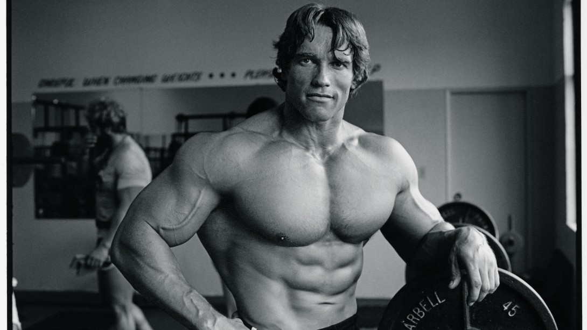

Mr. Olympia Winners (1965-2017)
Larry Scott
The first Mr. Olympia champion and American bodybuilder to be crowned. Larry Scott would go on to defend his title the very next year before subsequently retiring. This marked the official start of the Mr. Olympia contest era in which notable bodybuilders would go on to see greater success.
Arnold Schwarzenegger
The legend himself and Pumping Iron star officially took over as the new Mr. Olympia champion in 1970 and went on to win an outstanding 7 titles over his glorified bodybuilding career before pursuing his acting career with box office hits that featured his incredible stature such as The Terminator and Conan the Barbarian.
Franco Columbu
Fellow Pumping Iron co-star and best friend of Arnold Schwarzenegger, Columbu destroyed a heavily competitive class in both 1976 and 1981 to solidify his tremendous bodybuilding resume. Columbu was well known to have one of the most impressive chests and upper body definition with an incredible amount of size compared to many during this era. Franco ultimately passed away in 2019 at the age of 78 due to an accident at sea.
Frank Zane
Zane had brought aesthetics to the table during the end of the 1970’s and was a true testament to bodybuilding in general. Frank was able to accomplish an incredible goal of 3 Mr. Olympia titles in a row and eventually changed how competitors would tailor their physique as Zane had a truly impressive physique and symmetry.
Dorian Yates
During Yates’ career, a new standard of size was set for the Olympia as Dorian would consistently bring an eye-gazing amount of mass with each presentation on stage. Yates would go on to win 6 straight Olympia titles throughout his dominance.
Ronnie Coleman
Long considered as one of the best body builders of all time, Ronnie Coleman is well known for his intense training style as depicted in many small documentaries during his powerhouse journey that led to 8 straight Mr. O titles. Coleman was also able to pursue his profession of a full-time police officer during his bodybuilding career.
Jay Cutler
Fellow rival of Ronnie Coleman, Jay Cutler came under fire in 2001 when he was shown to have used a banned diuretic during the Olympia that year which was eventually overturned, and his second-place finish helped push him into the spotlight for his first overall win in 2006. Cutler would go on to win 4 Mr. Olympia titles during his tenure within bodybuilding.
Phil Heath
Most notable for his recent onslaught in taking the title for 7 straight years, Phil Heath was able to take down Jay Cutler during his prime and held the top spot for years to come. Heath was a collegiate basketball player at the University of Denver where he was the main star before pursuing his passion in bodybuilding.